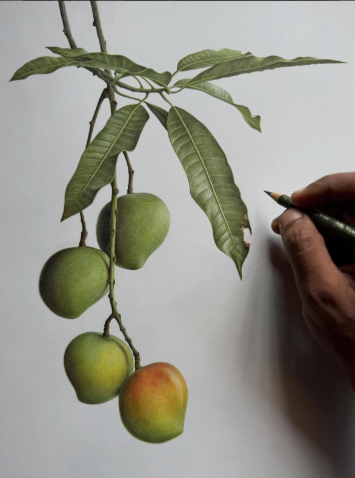
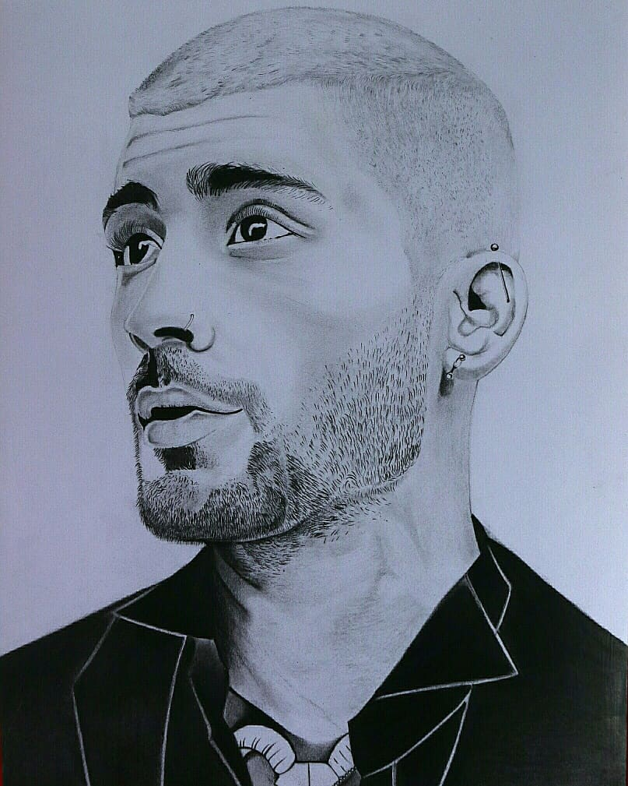
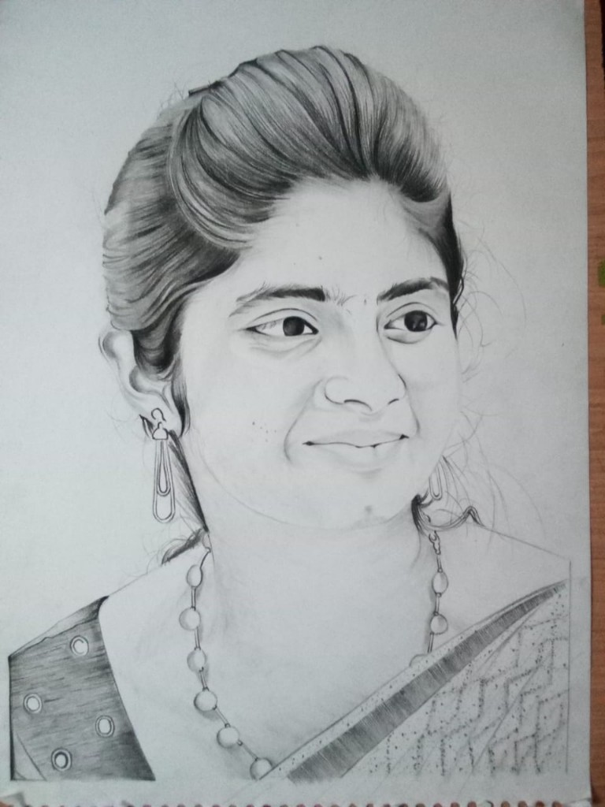

About
I design products that make complex things feel clear.
Hi, I’m Ajith Alphonse — a Product Designer based in Salt Lake City. I work across generative AI, human-AI interaction and digital commerce, turning complex systems into interfaces that feel clear and controllable.
Currently
Adobe Firefly
Contract Product Design focused on post-generation editing and creative control — helping creators refine localized areas, combine spatial input with language, and keep direction after the first AI result.
View Adobe Firefly case study →
Previously
Flipkart
Product / UX design for AI-powered search and product discovery — intent-aware shopping, visual search, adaptive filters, comparison and decision support at e-commerce scale.
View Flipkart case study →
Different products. The same design question.
How do people communicate intent, understand the system, and decide with confidence?
Outside the screen
I still draw people.
Portrait drawing keeps my eye sensitive to small details — the same ones that make an interface feel intentional.
-

-
-
-

-
-
-
-

At a glance
At a glance
Now
Adobe Firefly
Product Design · Generative AI
Before
Flipkart
Search / Discovery / Commerce
Education
MS Information Systems
University of Utah · 2026
Let’s build something thoughtful.